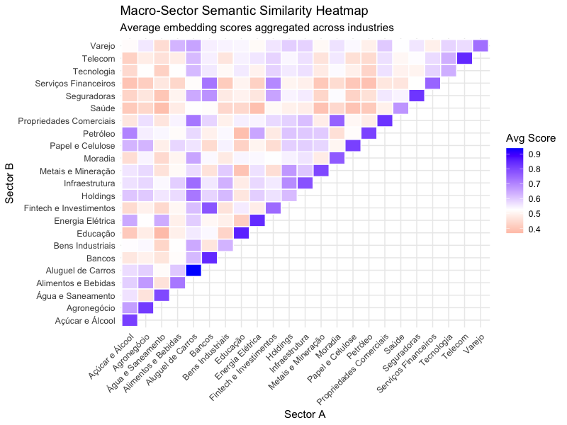
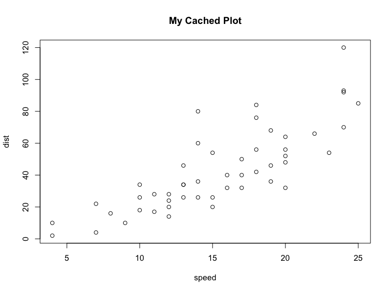

ontology healthcheck validation...
23 sectors and 171 assets
indexes updated at 2026-05-05 (IBOV~60%=12) (IBOV~90%=38) (IBOV=79) (SMLL=110) quantamental healthcheck validation...Instalar o R versão posterior a 4.5.2
https://cran.r-project.org/bin/windows/base/
E a IDE RStudio
https://docs.posit.co/ide/user/#rstudio-ide-oss-downloads
Tidyverse package é suficiente para execuções básicas - link-
> install.packages("tidyverse")
Quanta.mental
- Quantitativo: refere-se à análise quantitativa — modelos matemáticos, algoritmos, estatística e processamento de dados.
- Fundamental: refere-se à análise fundamentalista tradicional — avaliação de balanços patrimoniais, saúde do negócio, governança e contexto de mercado.
A palavra começou a ganhar forte tração em Wall Street por volta de 2015–2017, em resposta a uma mudança estrutural no mercado financeiro global:
A explosão dos Big Data e IA: Os gestores fundamentalistas tradicionais (como os seguidores da escola de Warren Buffett) perceberam que a análise manual de balanços e relatórios já não era suficiente diante do volume massivo de dados alternativos (como dados de satélite, navegação na web e transações de cartão de crédito).
Os limites dos algoritmos puros: Por outro lado, os fundos puramente quantitativos (quant, pioneiros como Jim Simons) enfrentavam desafios com eventos imprevisíveis (black swans) e “ruídos” estatísticos onde o julgamento humano e a visão macro ainda se faziam indispensáveis.
A gestão quantamental propõe o “melhor dos dois mundos”: o poder computacional analisa de dados para gerar hipóteses e identificar oportunidades, enquanto o faro e julgamento do analista humano valida essas teses e compreende as nuances do negócio que a matemática pura não consegue capturar.
Quantamental é um neologismo no mercado financeiro combinando dois conceitos: quantitativo (análise estatística) e fundamental (dados fundamentalistas referentes aos negócios da empresa).
A proposta desse projeto é unir essas duas visões por meio de uma ontologia do mercado financeiro, organizando informações sobre empresas, setores e índices da B3 de forma simples para análise em R.
Uma ontologia pode ser entendida como um mapa de conhecimento. Em vez de trabalhar apenas com tabelas isoladas, ela organiza como os elementos do mercado financeiro se relacionam.
Por exemplo:
Essa organização facilita análises exploratórias, construção de modelos quantitativos e geração de insights para investimento.
ontology healthcheck validation...
23 sectors and 171 assets
indexes updated at 2026-05-05 (IBOV~60%=12) (IBOV~90%=38) (IBOV=79) (SMLL=110) quantamental healthcheck validation...Os participantes correspondem aos ativos cadastrados, empresas que serão analisadas nesse estudo. Aqui abaixo segue uma lista de amostragem com 8 ativos.
[1] "RAIZ4" "TEND3" "CPLE3" "BRAP4" "ITUB4" "ORVR3" "JBSS32" "KLBN11"A ontologia também organiza os setores econômicos utilizados para agrupar os ativos.
[1] "Açúcar e Álcool" "Agronegócio"
[3] "Água e Saneamento" "Alimentos e Bebidas"
[5] "Aluguel de Carros" "Bancos"
[7] "Bens Industriais" "Educação"
[9] "Energia Elétrica" "Fintech e Investimentos"
[11] "Holdings" "Infraestrutura"
[13] "Metais e Mineração" "Moradia"
[15] "Papel e Celulose" "Petróleo"
[17] "Propriedades Comerciais" "Saúde"
[19] "Seguradoras" "Serviços Financeiros"
[21] "Tecnologia" "Telecom"
[23] "Varejo" Os índices da B3 agrupam empresas segundo diferentes critérios e atribui um percentual de participação para cada constituinte. A partir dos índices é possível fazer novas composições. A tabela abaixo mostra quantos ativos estão presentes em alguns índices disponíveis na ontologia do projeto.
Índice Participantes Descrição
1 IBOV_60 12 60% do índice IBOV
2 IBOV_90 38 90% do índice IBOV
3 IBOV 79 Índice Bovespa completo
4 SMLL 110 Índice Small CapsA matriz de similaridade mede o quanto duas empresas se parecem considerando diversas características observadas pelo modelo. Em vez de classificá-las apenas em setores tradicionais, ela atribui um grau de proximidade entre cada par de empresas. Quanto maior essa similaridade, maior a probabilidade de que os ativos compartilhem comportamentos, exposições ou características em comum. Essa informação permite formar agrupamentos dinâmicos de empresas, refletindo relações que podem não ser capturadas pelas classificações convencionais.
A matriz de similaridade também pode ser utilizada para analisar relações em um nível mais agregado. Ao agrupar os ativos por setor econômico, é possível calcular a similaridade média entre todos os pares de empresas pertencentes a dois setores, produzindo uma medida de proximidade entre eles. O mapa de calor (heatmap) apresentado a seguir resume essas relações. Essa visualização facilita a identificação de setores com características semelhantes e evidencia afinidades que podem não ser percebidas apenas pela classificação setorial tradicional.

Uma forma intuitiva de entender a matriz de similaridade é imaginar uma rede de empresas, em que cada empresa está conectada às demais por um grau de afinidade.
Enquanto classificações tradicionais agrupam empresas apenas por setor econômico (por exemplo, bancos, varejo ou energia), a matriz de similaridade considera um conjunto muito mais amplo de informações, como características descritivas, financeiras, operacionais, fatores de risco, métricas de mercado e outros atributos utilizados pelo modelo.
O resultado é uma matriz em que cada elemento representa a intensidade da similaridade entre duas empresas:
Essa abordagem permite construir agrupamentos de forma dinâmica, isto é, os grupos surgem a partir dos dados observados e podem evoluir conforme as empresas mudam ao longo do tempo.
Na prática, isso oferece diversas vantagens:
Dessa forma, a ontologia deixa de representar apenas uma estrutura hierárquica de conhecimento e passa a incorporar também a intensidade das relações entre os participantes, enriquecendo a representação do universo de ativos.
Até esse ponto não tocamos nas variáveis preço, receita ou lucro. Ao longo deste tutorial utilizaremos esses conjuntos de empresas para explorar os dados da ontologia e entender como as relações entre empresas e setores podem auxiliar em análises financeiras.
Até este ponto, vimos como a ontologia organiza o universo de ativos e como a matriz de similaridade permite identificar relações entre empresas e setores. O próximo passo é compreender como cada empresa é representada dentro de um modelo.
Uma feature é uma característica mensurável de uma empresa. Ela representa um aspecto específico do negócio, do mercado ou do comportamento do ativo e é utilizada como informação de entrada para análises quantitativas.
Exemplos de features incluem indicadores fundamentalistas, como Preço/Lucro (P/L), Retorno sobre Patrimônio (ROE) e Margem EBITDA, além de métricas de mercado, como volatilidade, liquidez, retorno acumulado e beta.
Individualmente, cada feature oferece uma perspectiva limitada sobre uma empresa. Em conjunto, porém, elas formam uma representação multidimensional do ativo, permitindo que empresas sejam comparadas, agrupadas e avaliadas de forma objetiva. Em vez de responder se uma empresa é “boa” ou “ruim” com base em um único indicador, um modelo Quantamental considera simultaneamente centenas de features para construir uma visão mais abrangente de suas características.
A tabela a seguir ilustra, de forma simplificada, como diferentes empresas podem ser descritas por um conjunto de features.
| Features disponíveis pelo modelo | ||||||
| Cada linha representa uma empresa e cada coluna uma feature. | ||||||
| Empresa | Ticker | Last Report | Marketcap | P/L | ROE | Var.12M |
|---|---|---|---|---|---|---|
| Petrobras | PETR4 | May 12 | 495.8B | 4.59 | 24.2% | 23.3% |
| Itaú | ITUB4 | May 6 | 461.1B | 9.81 | 21.4% | 14.4% |
| Vale | VALE3 | Apr 29 | 321.6B | 23.24 | 7.1% | 55.8% |
| BTG | BPAC11 | May 11 | 209.9B | 12.16 | 23.2% | 28.9% |
| Weg | WEGE3 | Apr 29 | 195.1B | 29.04 | 35.2% | 11.2% |
| Bradesco | BBDC4 | May 7 | 186.6B | 7.95 | 13.0% | 7.6% |
| Axia | AXIA3 | May 7 | 156.4B | 16.39 | 7.9% | 44.3% |
| BB | BBAS3 | May 14 | 114.6B | 7.29 | 8.0% | −5.6% |
| Sabesp | SBSP3 | May 8 | 102.2B | 11.70 | 19.9% | −74.4% |
| B3 | B3SA3 | May 8 | 73.5B | 14.82 | 27.1% | 7.7% |
Até este ponto, vimos que cada empresa pode ser representada por centenas de features. Entretanto, essas variáveis não constituem apenas uma lista de indicadores independentes. Cada uma delas descreve um aspecto específico da empresa e, por esse motivo, podem ser organizadas em famílias de variáveis.
Essa organização facilita a interpretação dos dados e introduz, de forma natural, os principais conceitos da análise fundamentalista. Em vez de memorizar indicadores isolados, o investidor passa a compreender qual dimensão da empresa cada variável procura representar.
As principais famílias utilizadas no projeto são apresentadas a seguir.
| Principais famílias de features | |||||
| Exemplos de indicadores disponíveis no modelo. | |||||
Fundamental Analysis
|
Market Analysis
|
||||
|---|---|---|---|---|---|
| Valuation | Quality | Growth | Momentum | Risk | Liquidity |
| P/L | ROE | Revenue Growth | 12M Return | Beta | Market Cap |
| EV/EBITDA | ROIC | EPS Growth | 6M Return | Volatility | Daily Volume |
| P/Book | EBITDA Margin | EBITDA Growth | Relative Strength | Drawdown | Turnover |
| FCF Yield | Gross Margin | Cash Flow Growth | Price Trend | Tracking Error | Free Float |
De forma simplificada, cada família responde a uma pergunta diferente:
Embora cada indicador forneça apenas uma perspectiva sobre a empresa, a combinação de features pertencentes a diferentes famílias produz uma descrição muito mais rica do ativo. Por exemplo, uma empresa pode apresentar um múltiplo de valuation atrativo, mas possuir baixa rentabilidade ou elevado risco. Da mesma forma, empresas com excelentes fundamentos podem apresentar desempenho inferior no curto prazo caso o mercado esteja precificando expectativas desfavoráveis.
Essa visão multidimensional é uma das principais características da abordagem Quantamental. Em vez de basear uma decisão em um único indicador, os modelos combinam informações provenientes de diferentes famílias de variáveis para construir uma representação mais completa e objetiva de cada empresa.
Com a ontologia enriquecida por features (em séries temporais principalmente), você pode ir além dos exemplos básicos e explorar análises mais complexas: * Séries Temporais: Integre dados para visualizar a evolução dos ativos em comparação direta com seus pares mais similares identificados na ontologia. Utilize o cálculo de medianas para criar índices sintéticos de grupos de afinidade, servindo como um benchmark que mitiga o efeito de outliers e permite identificar desvios significativos de performance ou valuation dentro de um mesmo cluster ao longo do tempo.
Este tutorial se baseia em conceitos de finanças quantitativas e análise fundamentalista. Para aprofundar nos temas abordados, sugerimos as seguintes leituras:
Livros TBD
Como criar um arquivo Rmd R Markdown? link
Se você chegou até aqui, talvez queira ver as [engrenagens](codigos_revelados.html) rodando. ⚙️
…………….. SAMPLE ……………
Referências para outros arquivos scripts .R, .Rmd, tutoriais ou repositórios
Feature Engineering
Uso avançado com o pacote quantamental.data
Este tutorial possui caráter exploratório e educacional, tendo como objetivo apresentar os principais conceitos por meio de exemplos simples e intuitivos. As implementações e fluxos de trabalho foram simplificados para facilitar o aprendizado e não representam, necessariamente, a forma mais eficiente ou completa de utilização do framework. Para uma abordagem mais avançada, incluindo funções especializadas, abstrações e recursos voltados ao desenvolvimento de aplicações, recomenda-se a utilização do pacote quantamental.data, disponível publicamente no GitHub.
::
TESTING AREA
::
